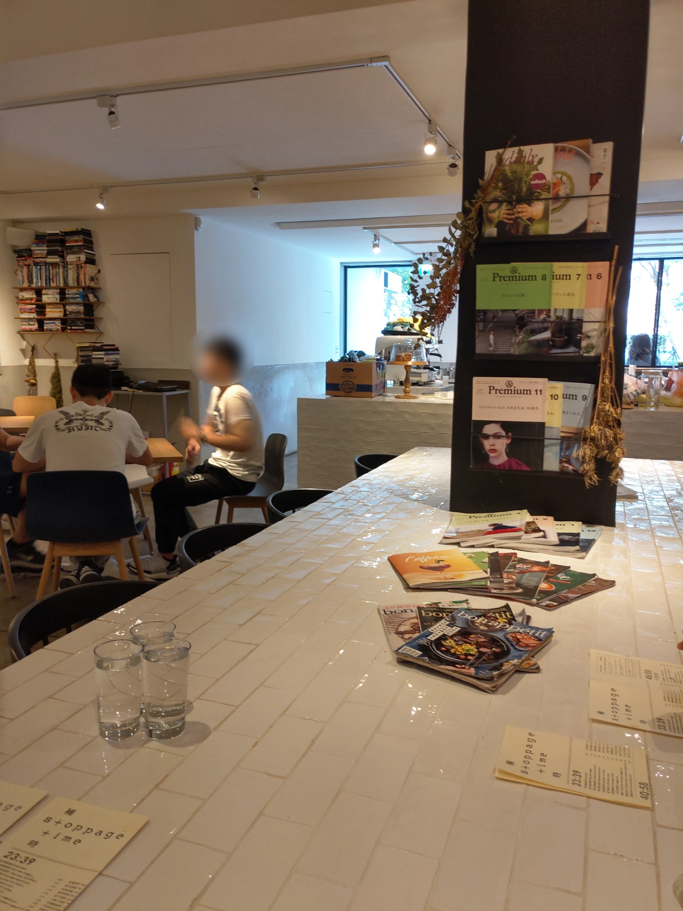

[台北] Stoppage Time 補時
| 餐廳名稱: | Stoppage Time 補時 |
|---|---|
| 地 址: | 台北市大安區和平東路二段96巷15弄30號一樓 |
| 營業時間: | 週一至週日 11:00 ~ 23:00 |
| 電 話: | 02 2736 6506 |
參加一個十幾人的聚會，主辦人選定 Stoppage Time 補時 咖啡。我們這個小團體提早到， 先點些東西來吃吃喝喝，休息一下，等待聚會開始。
先來一張大門口的正面照。 大門口左邊。 大門口右邊，入口也在此。
這張貼磁磚的桌子，中間有根柱子，就是今天十幾人的聚會的桌子。附帶一提，訂位時老闆 有提醒中間有柱子，有善盡告知的責任。 
這是裡面的小房間，設置了幾個單人座位。看來這家Coffee Shop 對一個人的客人不錯。
那外面當然就是四人桌為主。
這就是門口處的廚房，老闆留長髮，感覺蠻有性格的，雖然不太笑，但其實講話起來不兇。通常就是很有個性的人，食物有所堅持，才會好吃。 長髮都遮成這樣了，不打馬賽克應該可以吧。
菜單密密麻麻，記得用瀏覽器的右鍵點選這張圖，選 “檢視圖片”，再放大到 100% 來看，才會清楚。 飲料很多種，也有鹹食和甜食。
牆壁上的新菜色。
友人吃素，與老闆討論出了一個 莫左瑞拉吐司，不放火腿。
這個通心粉蠻好吃的，鹹香有勁，調味不俗，似乎不在菜單上。
檸檬汁，略不甜，還不錯喝。
芒果拉西，拉西似乎就是印度的優格，也不錯喝。
提拉米蘇。
整體吃完下來，覺得味道都不錯，有一些特色餐點，飲料也有正常水準，算是一間綜合指數很高分的店， 有機會願意回訪。